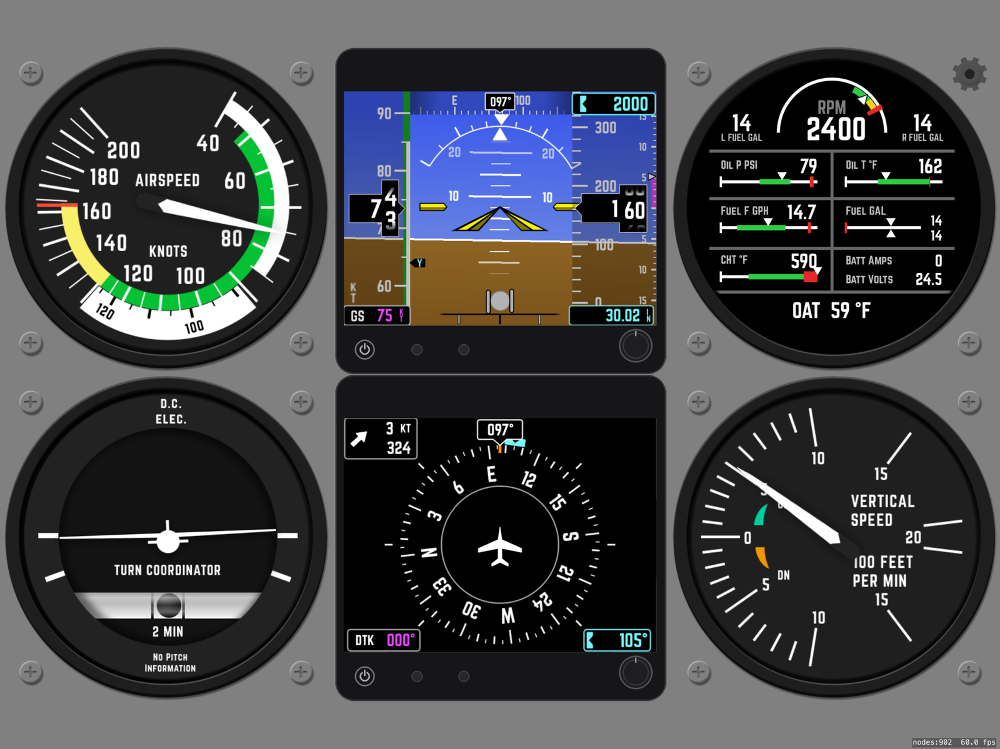
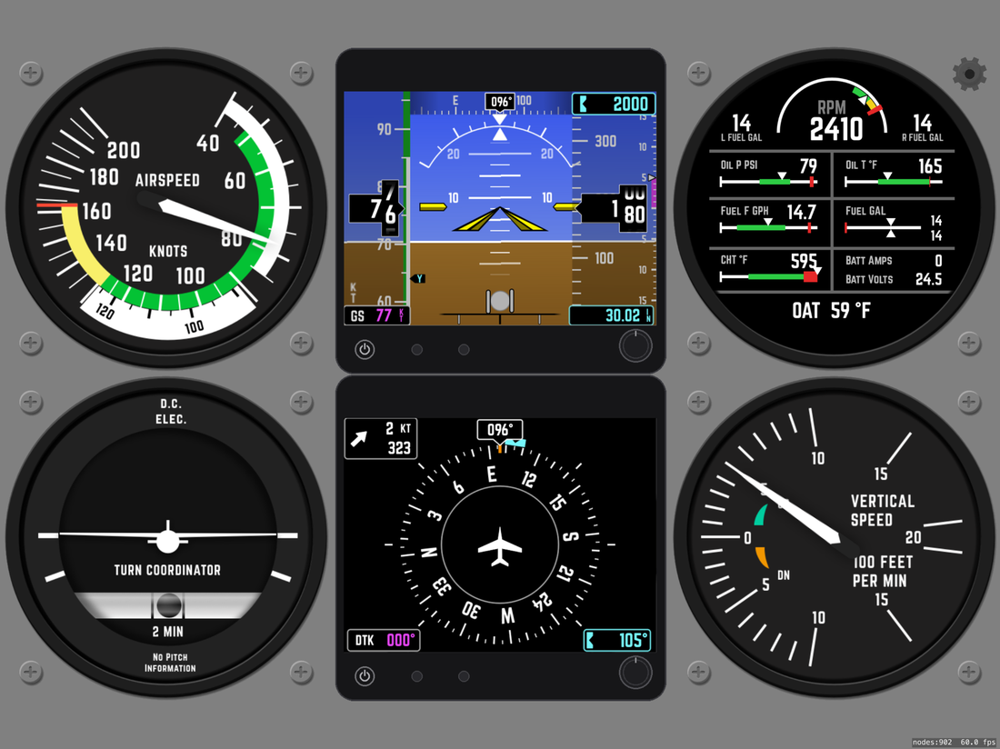
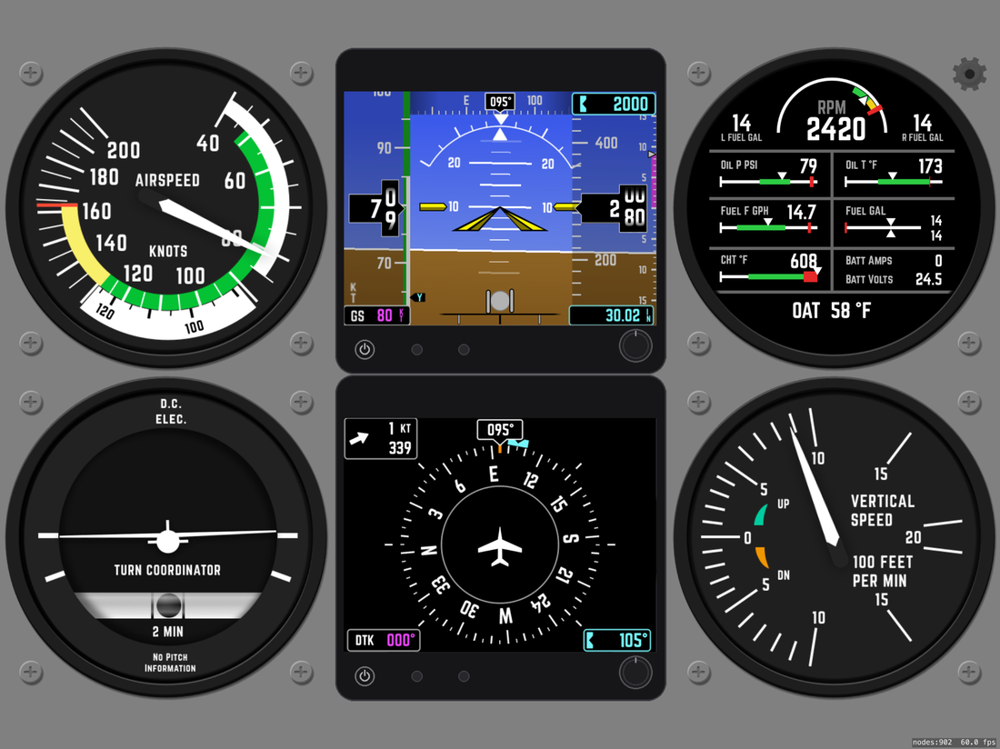
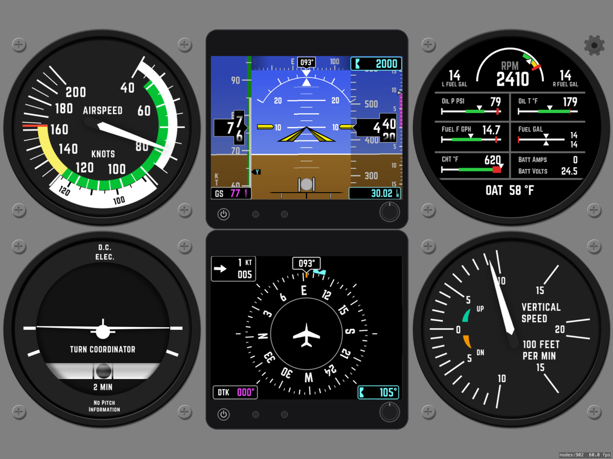

A full-screen glass panel — Garmin-style PFD, HSI, and engine display — driven in real time by your flight simulator over Wi-Fi.

Everything updates live as you fly — smooth needles, scrolling tapes, and rolling digit drums.
Attitude with pitch ladder & roll arc, airspeed and altitude tapes, heading tape, VSI, slip/skid ball, baro and selected-altitude bug.
Rotating compass rose with heading bug, ground track and desired track, distance to waypoint, and wind direction & speed.
RPM, fuel quantity & flow, oil pressure and temperature, CHT, battery amps/volts, and outside air temperature.
Color-banded indicator with the V-speed arcs for your aircraft.
Standard-rate turn with an inclinometer ball.
Fixed-scale climb/descent indicator with a moving pointer.
A small plugin streams telemetry from your simulator to the iPad. No cables, no setup screens to wrestle with.
Drop the included server plugin into your flight simulator.
SixPackX auto-discovers the simulator on your local Wi-Fi network — no IP typing required.
The panel comes alive with live attitude, speed, altitude, engine and navigation data.
Running full-screen on iPad.


